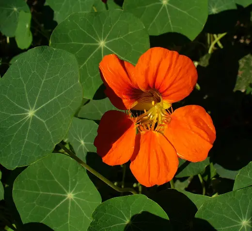

Sauces, preserves & sides
Nasturtium capers
Nasturtium capers is made with wild nasturtium.

How do you make nasturtium capers?
Green nasturtium seeds pickled in vinegar.
Wild ingredients
- Nasturtium (Tropaeolum majus): in season all year round
Watch the recipe

Video: Good Life Permaculture on YouTube